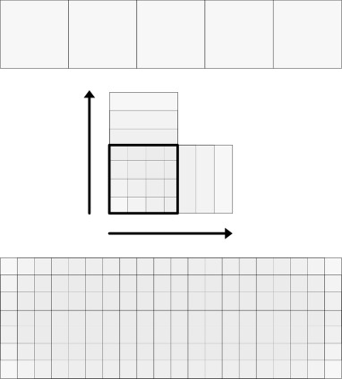
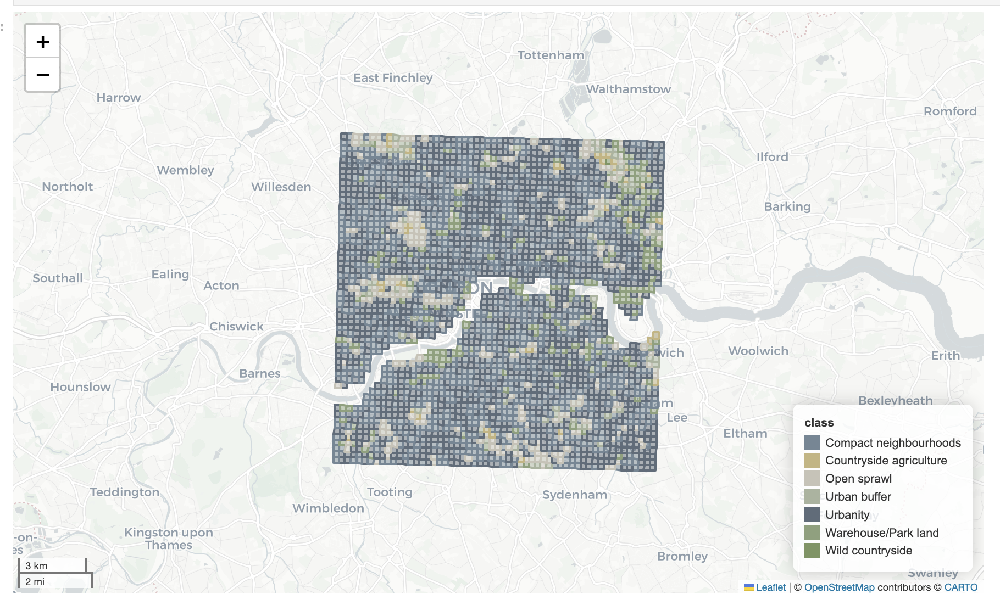
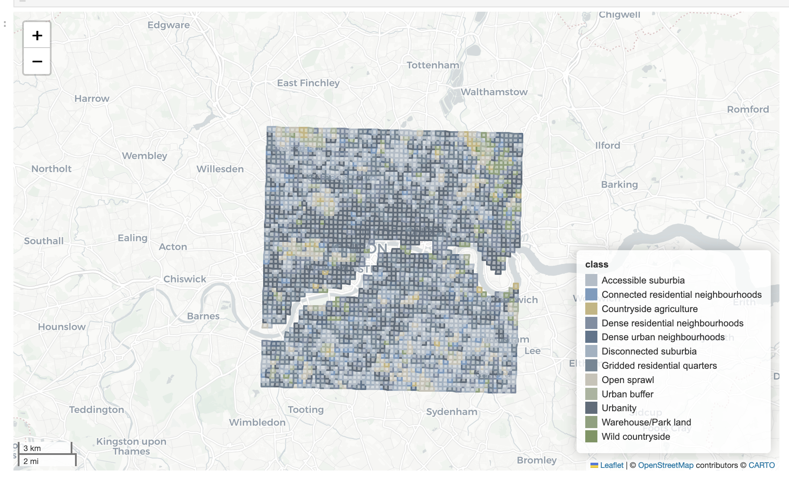

EuroFab: European Urban Fabric Classification Using Artificial Intelligence
Final report
Introduction
The spatial layout of the physical elements of cities affects most activities their residents undertake. Accessibility (Calafiore et al. 2023), subjective experience of the city and cost of housing (Qiu et al. 2022), as well as energy efficiency (Zhu et al. 2022) are some of the application areas where urban form is used to guide research, applications and policy. Due to the numerous patterns, scales and manifestations of urban form, researchers turn to classification as a method to reduce complexity and group the variations in urban form into classes. The derived classes vary depending on the application. Example coarse groups are continuous, discontinuous and non-urban land (European Environment Agency 1990). More detailed groupings capture the characteristics of streets and buildings, for example organic and gridiron streets (Araldi and Fusco 2024). These resulting classifications of urban form provide valuable insights into the structure of cities and towns, guide targeted policy applications, and form the backbone of urban planning.
However, detailed, scalable, and consistent classifications that reflect the nature of the local data all at the same time are scarcely available. We often see conceptual classification, which has a tendency to oversimplify the structure when “zooming in”, loosing the interest of planners and policy-makers, i.e. Stewart and Oke (2012). The classifications developed by key members of the EuroFab project team overcome these limitations (Fleischmann and Samardzhiev Forthcoming; Fleischmann and Arribas-Bel 2022; Fleischmann et al. 2022), but are dependent on the availability of high quality data capturing urban form - individual buildings and related street networks. The issue is that these are not always readily available, even within the context of generally data-rich countries of the European region. Furthermore, even if countries have high quality building data, they are typically missing information on the temporal evolution of the elements.
Therefore, there is a need to: one, derive detailed classifications at scale from suboptimal data that does not have the same qualities as, for example, cadastre would have; and two, add a temporal dimension to the classification which shows how it evolves over time. Such a novel classification can improve urban-form related research and policy applications, by providing researchers, policy makers and practitioners with unprecedented detail and temporal information on urban form. Existing work can be extended using the new detailed classes, while new avenues of research can be established using the temporal dimension.
The strategic goal of the project is to be the basis for subsequent work that will deliver a practically useful, detailed classification of all European urban fabric across time. The specific immediate aim of the current work is to develop a methodology capable of achieving the two objectives and verify its validity through a pilot study in Central Europe and the United Kingdom.
The basis for our work are two models - one based on satellite-derived building footprints; and a second, based on a direct use of Sentinel-2 visible bands. The overall approach is to use the first machine learning model to produce training data at scale for the second AI model, since currently such datasets do not exist, and to finally use the AI model to derive a detailed temporal classification of urban form in Europe. To further verify the validity of our approach and the usefulness of the results, we further carry out consultations with stakeholders from the private sector, local planning departments and government organisations. This work will give us insights into how to adapt the methodology and data for practical use cases.
The next three sections of the report describe in more detail the methodological approaches and results of the three work streams - the first machine learning morphological model, the second AI vision model, and the stakeholder engagement. The conclusion section interprets these findings and proposes how to scale the methodology for the whole of Europe, while highlighting potential limitations. The last Open Science section highlights the open source software and datasets developed during the project.
More details about the methodology, background and results of each stage of the project are available in the respective technical notes. The methodology and results from the report are being prepared for scientific publication in leading urban analytics journals.
Morphological machine learning model
Methodology
The main aim of the morphological machine learning model is to show that the (Fleischmann and Samardzhiev Forthcoming) urban fabric classification, built on cadastre data, can be reproduced using more widely available data sources - building footprints derived from satellite imagery, voluntarily contributed building footprints, i.e. OpenStreetMap building footprints, or combinations of both - Overture Map. This model can be later used to expand the cadastral taxonomy and generate training data for the AI vision model.
The study area covers five countries in Central Europe - Germany, Poland, Slovakia, Austria, Czechia. These countries were chosen as they cover a large area demonstrating the ability of the methodology to scale and have a rich variety of urban form types, developed under different planning regimes.
The bulk of the morphological work can be summarised as:
- Developing a scalable pipeline to generate morphological characteristics from alternative building footprints
- Assignment of cadastral urban classes to the alternative building footprints ( the ground truth for the model training)
- Training several models in different contexts and evaluating their ability to predict the assigned cadastral urban form classes , based on the features calculated in 1.
Morphological data pipeline
Core data


The core datasets used in the analysis are two types of building footprints - Microsoft Satellite Building footprints and Overture Maps building footprints - and street geometries from Overture Maps. The street network is a direct download from Overture Maps Transportation theme, a processed subset of data from OpenStreetMap, which has global coverage and high quality data. An example for Prague is shown in Figure 1.
Figure 2 shows a comparison between the cadastral data, Microsoft building footprints and Overture Maps building footprints. Both types of datasets have issues compared to cadastral information, however they generally have larger coverage. Microsoft building footprints have almost global coverage and are heterogenous - they come from the same source. Overture Maps data is more detailed and a combination of datasets, it even includes some Microsoft footprints. But this heterogeneity can make statistics calculated in different areas within the whole dataset incomparable to each other.
Morphological pipeline
The morphometric characterisation is directly derived from the method of (Fleischmann and Samardzhiev Forthcoming) to ensure that we minimise conceptual differences between the methodological backbone used to derive the target classification and the data used within our model. Therefore, we focus the morphological characterisation around the concept of Enclosed Tessellation Cells (Fleischmann et al. 2022) - “the portion of space that results from growing a morphological tessellation within an enclosure delineated by a series of natural or built barriers identified from the literature on urban form, function and perception”. In this definition, the morphological tessellation is a delineation of the space based on Voronoi polygons centred around buildings and an enclosure is any area enclosed by streets. The boundaries of ETCs also represent the closest area of land to each building, than to any other building within an enclosure, and therefore can act as the unit that combines aspects of building and street morphological characteristics.
Broadly the pipeline can be summarised as:
- Street & building preprocessing. This includes downloading the streets and buildings, simplifying the street network, and fixing topological issues with the building footprints.
- Generating derived morphological elements - street nodes, street enclosures, Enclosed Tessellation cells.
- Calculating 52 morphological characteristics which capture aspects of all individual elements (i.e. building area or perimeter), as well as their interactions - for example, buildings per street or number of reachable ETCs within five topological steps of the street network.
This pipeline results in around 62 million ETCs with 52 morphological characteristics for the Microsoft data, and around 88 million ETCs with 52 morphological characteristics for the Overture Maps data.
Ground truth classes
| Cluster name | Cluster Description |
|---|---|
| Dense Connected Developments | In this cluster, the built-up density and local street connectivity are high, while inter-building distances remain relatively small. Buildings frequently share walls, forming larger structures along relatively short and narrow streets. |
| Large Interconnected Blocks | This cluster has very high built-up density and local street connectivity, with narrow and short streets. It is primarily characterised by a high count of connected buildings forming enclosed blocks with courtyards. Furthermore, the distances between the formed blocks is small. |
| Dense Standalone Buildings | This cluster has moderate to high built-up density and local street connectivity, with longer and wider streets compared to other dense developments. Shared walls between buildings are less common, and distances within buildings are moderate, reflecting a pattern of standalone structures within a robust street network . |
| Compact Development | Development in this cluster is characterised by a high number of buildings and relatively dense local street connectivity, with short and narrow streets. Shared walls appear regularly, and inter-building distances are relatively small, with building sizes being typically small and uniform. |
| Cul-de-Sac Layout | Development in this cluster is characterised by a moderate to high built-up density, short and moderately dense locally street connectivity. A distinguishing feature is the significant presence of cul-de-sacs. The buildings along the streets are relatively smaller, and more numerous, than in Aligned Winding Streets. |
| Aligned Winding Streets | This cluster has low to moderate built-up and street connectivity. Buildings exhibit a consistent alignment among themselves and also along streets of varying length, width and linearity. There is also a significant number of shared walls between structures. |
| Sparse Rural Development | This cluster has a sparse built-up area with low street connectivity and messiness. The streets are long and the widest in the taxonomy, while the distance between buildings is the largest. Adjacency between structures is also the lowest. |
| Dispersed Linear Development | This cluster has a moderate built up area and the lowest local street connectivity in the taxonomy, typically forming long linear villages. Its streets are the longest, linear, wide and have considerable distances between street intersections, and minimal shared walls between structures. |
| Linear Development | This cluster has a moderate built up area and the low local street connectivity in the taxonomy, typically forming long linear villages. Its streets are long, linear, wide and there are minimal shared walls between structures. Its distinguishing features from “Extended Linear Development” is the shorter streets and relatively higher street connectivity. |
| Sparse Open Layout | This cluster is characterized by low built-up density, low street connectivity, large distances between buildings, few shared walls, and large open spaces around buildings. The streets are few, open and wide. The buildings are moderate in size and more diverse than those in the Sparse Road-Linked Development cluster. |
| Sparse Road-Linked Development | This cluster is characterized by low built-up density, low street connectivity, large distances between buildings, few shared walls, and large open spaces around buildings. The streets are few, open and wide. In contrast, with ‘ Sparse Open Layout’ the buildings are smaller and more uniform. |
| Large Utilitarian Development | This cluster consists of the largest buildings with notable variations in size and shape, as well as low to moderate street connectivity and wide streets. The design does not emphasise sunlight exposure, creating broad but less refined configurations, typical of industrial and other service areas. |
| Extensive Wide-Spaced Developments | This cluster consists of the large buildings with moderate variations in size and shape, as well as low to moderate street connectivity and wide streets. The resulting environment is spacious, with significant open areas between structures, typical of modernist housing. |
| Level 1 | Level 2 | Level 3 | Level 4 |
|---|---|---|---|
| Traditional Street Network | Central Urban Developments | Central Urban Developments | Dense Connected Developments |
| Large Interconnected Blocks | |||
| Traditional Urban Developments | Dense Urban Developments | Dense Standalone Buildings | |
| Compact Development | |||
| Street-aligned Developments | Aligned Winding Streets | ||
| Cul-de-Sac Layout | |||
| Utilitarian Street Network | Utilitarian street network | Large Scale Developments | Large Utilitarian Development |
| Extensive Wide-Spaced Developments | |||
| Sparse Road Network Developments | Sparse Open Layout | ||
| Sparse Road-Linked Development | |||
| Linear & Rural Development | Linear Road Network Developments | Dispersed Linear Development | |
| Linear Development | |||
| Sparse Rural Development | Sparse Rural Development |
The taxonomy of ground truth classes from (Fleischmann and Samardzhiev Forthcoming) and available as an interactive map online at HiMOC is presented in Table 2. The descriptions for the level 4 classes are available in Table 1. All subsequent analysis focuses on Levels 3 and 4. The target labels from this are assigned to each building from the morphological pipeline based on spatial intersections.
Modelling scenarios

Figure 3 shows the all experiments that will be performed for each dataset. The main goal with so many training / testing configurations is to get detailed statistics about the expected model performance in realistic scenarios - predicting urban form in various types of new environments. Two models - a global random model and a global spatially explicit model - are trained to highlight the effects of spatial lag in model training and testing, while the country specific models are trained to evaluate the ability of the models to generalise outside of the training data scope. The train / test configuration for the spatially explicit model first delineates the study area into h3 level second hexagon cells with an area of around 500 sqm. The dataset is then split into train and test subsets randomly, but ensuring that all buildings within a hexagon are either part of the train or test subset.
In total we test 24 models to gain information about the predictability of detailed urban form classes. All experiments are repeated independently for each dataset - once for the Overture and once for the Microsoft building footprints - and for each of Level 3 and Level 4 of the taxonomy. This is done to verify in which cases, what data can be used to derive detailed urban form classifications. The models for each experiment are HistogramGradientBoostingClassifier and share the same parameters - no max depth, no max leaf nodes, max_features = 0.5, learning_rate = .03 .
Results
| Random | Spatial | OoS | SK | PL | DE | AT | CZ | |
|---|---|---|---|---|---|---|---|---|
| Weighted F1 | 0.74 | 0.66 | 0.59 | 0.54 | 0.60 | 0.59 | 0.63 | 0.56 |
| Micro F1 | 0.74 | 0.65 | 0.57 | 0.53 | 0.61 | 0.58 | 0.62 | 0.53 |
| Macro F1 | 0.73 | 0.63 | 0.48 | 0.45 | 0.54 | 0.47 | 0.49 | 0.45 |
| Random | Spatial | OoS | SK | PL | DE | AT | CZ | |
|---|---|---|---|---|---|---|---|---|
| Weighted F1 | 0.74 | 0.66 | 0.59 | 0.51 | 0.61 | 0.62 | 0.65 | 0.59 |
| Micro F1 | 0.74 | 0.66 | 0.58 | 0.50 | 0.61 | 0.61 | 0.63 | 0.56 |
| Macro F1 | 0.74 | 0.64 | 0.50 | 0.46 | 0.57 | 0.49 | 0.53 | 0.47 |
| Random | Spatial | OoS | SK | PL | DE | AT | CZ | |
|---|---|---|---|---|---|---|---|---|
| Central Urban Developments | 0.62 | 0.56 | 0.46 | 0.37 | 0.45 | 0.51 | 0.50 | 0.47 |
| Dense Urban Developments | 0.73 | 0.67 | 0.65 | 0.64 | 0.70 | 0.64 | 0.66 | 0.62 |
| Large Scale Developments | 0.54 | 0.46 | 0.42 | 0.34 | 0.55 | 0.37 | 0.39 | 0.42 |
| Linear Road Network Developments | 0.87 | 0.67 | 0.36 | 0.45 | 0.59 | 0.36 | 0.20 | 0.20 |
| Sparse Road Network Developments | 0.79 | 0.71 | 0.64 | 0.52 | 0.70 | 0.61 | 0.73 | 0.64 |
| Sparse Rural Development | 0.87 | 0.71 | 0.38 | 0.31 | 0.46 | 0.18 | 0.47 | 0.47 |
| Street-aligned Developments | 0.70 | 0.63 | 0.46 | 0.56 | 0.33 | 0.59 | 0.49 | 0.32 |
| Random | Spatial | OoS | SK | PL | DE | AT | CZ | |
|---|---|---|---|---|---|---|---|---|
| Central Urban Developments | 0.74 | 0.69 | 0.59 | 0.41 | 0.62 | 0.67 | 0.65 | 0.62 |
| Dense Urban Developments | 0.72 | 0.67 | 0.65 | 0.64 | 0.69 | 0.64 | 0.66 | 0.63 |
| Large Scale Developments | 0.54 | 0.45 | 0.40 | 0.36 | 0.55 | 0.36 | 0.38 | 0.34 |
| Linear Road Network Developments | 0.86 | 0.66 | 0.38 | 0.46 | 0.60 | 0.36 | 0.26 | 0.23 |
| Sparse Road Network Developments | 0.78 | 0.70 | 0.64 | 0.49 | 0.69 | 0.60 | 0.73 | 0.67 |
| Sparse Rural Development | 0.85 | 0.71 | 0.39 | 0.36 | 0.47 | 0.16 | 0.51 | 0.47 |
| Street-aligned Developments | 0.69 | 0.62 | 0.46 | 0.49 | 0.35 | 0.60 | 0.51 | 0.35 |
| Random | Spatial | OoS | SK | PL | DE | AT | CZ | |
|---|---|---|---|---|---|---|---|---|
| Weighted F1 | 0.59 | 0.52 | 0.38 | 0.38 | 0.42 | 0.36 | 0.44 | 0.29 |
| Micro F1 | 0.59 | 0.52 | 0.37 | 0.38 | 0.42 | 0.37 | 0.40 | 0.28 |
| Macro F1 | 0.59 | 0.49 | 0.30 | 0.30 | 0.35 | 0.31 | 0.30 | 0.26 |
| Random | Spatial | OoS | SK | PL | DE | AT | CZ | |
|---|---|---|---|---|---|---|---|---|
| Weighted F1 | 0.70 | 0.55 | 0.41 | 0.35 | 0.43 | 0.41 | 0.49 | 0.39 |
| Micro F1 | 0.70 | 0.54 | 0.40 | 0.34 | 0.43 | 0.41 | 0.46 | 0.36 |
| Macro F1 | 0.71 | 0.54 | 0.34 | 0.30 | 0.38 | 0.35 | 0.36 | 0.32 |
| Random | Spatial | OoS | SK | PL | DE | AT | CZ | |
|---|---|---|---|---|---|---|---|---|
| Aligned Winding Streets | 0.51 | 0.45 | 0.28 | 0.35 | 0.21 | 0.36 | 0.28 | 0.18 |
| Compact Development | 0.59 | 0.55 | 0.13 | 0.15 | 0.09 | 0.24 | 0.09 | 0.08 |
| Cul-de-Sac Layout | 0.57 | 0.52 | 0.43 | 0.52 | 0.31 | 0.52 | 0.47 | 0.32 |
| Dense Connected Developments | 0.50 | 0.46 | 0.33 | 0.29 | 0.29 | 0.45 | 0.33 | 0.29 |
| Dense Standalone Buildings | 0.63 | 0.56 | 0.54 | 0.53 | 0.65 | 0.38 | 0.55 | 0.57 |
| Dispersed Linear Development | 0.91 | 0.64 | 0.19 | 0.17 | 0.34 | 0.18 | 0.06 | 0.18 |
| Extensive Wide-Spaced Developments | 0.41 | 0.31 | 0.25 | 0.25 | 0.46 | 0.13 | 0.19 | 0.25 |
| Large Interconnected Blocks | 0.36 | 0.28 | 0.24 | 0.22 | 0.17 | 0.37 | 0.30 | 0.15 |
| Large Utilitarian Development | 0.49 | 0.40 | 0.32 | 0.23 | 0.34 | 0.36 | 0.34 | 0.34 |
| Linear Development | 0.73 | 0.50 | 0.28 | 0.37 | 0.43 | 0.29 | 0.13 | 0.16 |
| Sparse Open Layout | 0.62 | 0.56 | 0.31 | 0.14 | 0.36 | 0.32 | 0.50 | 0.24 |
| Sparse Road-Linked Development | 0.57 | 0.46 | 0.27 | 0.40 | 0.32 | 0.29 | 0.17 | 0.19 |
| Sparse Rural Development | 0.79 | 0.69 | 0.39 | 0.29 | 0.54 | 0.17 | 0.49 | 0.47 |
| Random | Spatial | OoS | SK | PL | DE | AT | CZ | |
|---|---|---|---|---|---|---|---|---|
| Aligned Winding Streets | 0.61 | 0.46 | 0.29 | 0.28 | 0.27 | 0.37 | 0.31 | 0.25 |
| Compact Development | 0.66 | 0.55 | 0.16 | 0.09 | 0.12 | 0.30 | 0.18 | 0.11 |
| Cul-de-Sac Layout | 0.65 | 0.51 | 0.42 | 0.48 | 0.31 | 0.50 | 0.47 | 0.32 |
| Dense Connected Developments | 0.67 | 0.58 | 0.43 | 0.30 | 0.44 | 0.58 | 0.39 | 0.44 |
| Dense Standalone Buildings | 0.69 | 0.57 | 0.53 | 0.53 | 0.63 | 0.36 | 0.53 | 0.61 |
| Dispersed Linear Development | 0.96 | 0.65 | 0.16 | 0.09 | 0.31 | 0.16 | 0.07 | 0.19 |
| Extensive Wide-Spaced Developments | 0.52 | 0.36 | 0.27 | 0.30 | 0.47 | 0.13 | 0.23 | 0.22 |
| Large Interconnected Blocks | 0.69 | 0.60 | 0.46 | 0.41 | 0.35 | 0.57 | 0.57 | 0.42 |
| Large Utilitarian Development | 0.60 | 0.44 | 0.37 | 0.28 | 0.37 | 0.42 | 0.38 | 0.41 |
| Linear Development | 0.88 | 0.53 | 0.30 | 0.37 | 0.44 | 0.29 | 0.21 | 0.18 |
| Sparse Open Layout | 0.74 | 0.61 | 0.36 | 0.07 | 0.38 | 0.34 | 0.61 | 0.38 |
| Sparse Road-Linked Development | 0.72 | 0.49 | 0.29 | 0.37 | 0.34 | 0.32 | 0.21 | 0.21 |
| Sparse Rural Development | 0.88 | 0.71 | 0.41 | 0.35 | 0.55 | 0.15 | 0.50 | 0.47 |
Discussion
Urban Morphology
With regard to urban morphology, the results show that deriving detailed urban morphology classes from alternative data sources is possible. However, morphological types are heterogeneous, and the characteristics and factors that are important vary across scales of dissimilarity.
The modelling results show that a lot of useful information can be learned morphologically from one country and transferred to new contexts. Table 3 shows that at Level 3, the out-of-sample (OoS) averages are close to the spatial split F1 score of approximately 0.6. This is comparable to other land use prediction models, with two caveats. First, we are making predictions at a much higher level of detail—the individual building level—than typical land use models. Second, we test the models in a more difficult but more realistic scenario and report the possible out-of-sample scores. Furthermore, the higher scores in Table 3, as well as the confusion matrix in Figure 4, also suggest that we make reasonable misclassifications—one class at Level 4 is often misclassified as another Level 4 class within the same Level 3 category, i.e., part of the same branch in the ground truth taxonomy. If this were not the case, the Table 3 F1 scores would be equal to or lower than the Table 5 scores.
Nevertheless, in spite of these results, urban morphology remains highly heterogeneous. The differences between the country-specific models reflect the ability to use information from the analysed urban forms of several countries to infer the urban form type in an unseen country. If the results across these models were similar, it would imply that urban form is similar across countries. The large differences suggest that underlying national phenomena affect morphology. While this in itself is not a new finding, it has not been quantitatively demonstrated before, especially based on tens of morphological characteristics calculated using tens of millions of urban geometries across several countries.
This heterogeneity, however, varies. Austria has, on average, the most similar morphology to the other four Central European countries, whereas Czechia and Slovakia are the most different. The level of morphological detail at which the analysis is carried out also has an effect. At Level 3 of the morphological taxonomic tree the results across countries are relatively more similar than at Level 4. Furthermore, Dense Standalone Buildings , Large Interconnected Blocks , Large Utilitarian Development, are more predictable across all the country models than other classes.
Identifying different types of urban form also requires specific types of characteristics and data quality. The relative overall similarity between the scores in Table 3 (a) and Table 3 (b) suggests that, except in the case of Central Urban Developments, building polygon quality is not that important. Conversely, since the street network is shared, the results show the importance of the street network and how it can compensate for poor-quality building footprint data. As the required level of detail increases, however (see Table 5 (a) and Table 5 (b)), data quality and aspects of building morphology such as adjacency, configuration, and shape become more important.
Morphological data
The results also suggest that heterogeneous but more detailed data is preferable to homogeneous but coarser data for urban morphological analysis. Furthermore, the morphological pipeline developed for cadastre data can be run without modification on both the Microsoft (homogeneous, generally more detailed) and Overture maps data (heterogeneous, generally more detailed).
The overall higher or equivalent performance of Overture maps data shows that this data should be used when possible to identify urban morphological types for countries not in the training data. Overture maps’ schema and easy access to the OpenStreetMap street networks are additional benefits. Taken together, the results show that, overall, when cadastre data is not available, Overture maps data should be used in place of satellite-derived footprints.
The consistently higher performance of the spatial models also suggests using as much data as possible in model training, from any source, since it provides some local context.
Spatial modelling
The results from the comparisons highlight the need for complex train/testing dataset splits when training models in the presence of spatial autocorrelation. When reporting accuracy scores, many land use prediction models do not take into account spatial autocorrelation. As consistently shown in the F1 score tables in this work, this results in artificially higher scores. Even worse, in the case of more complex models, they may not be learning the weights necessary to perform inference, but rather overfitting and memorising the training data. This work further shows that, for urban morphological predictions and analysis specifically, spatial leakage is ubiquitous.
There are other works and papers that have highlighted the need for spatially stratified training of models. They suggest various schemes to split the data spatially - predefined grids or locally derived boundaries or other approaches all together. What this paper further highlights is the need to consider not just the specific type of spatial stratification, but the scale of stratification as well. The consistently lower scores for the spatial split and the individual countries models highlight the fact that there is spatial autocorrelation of morphological features at multiple scales - local, as defined in this work based on h3 level 7 grid cells, and national as defined by national boundaries.
In the specific case of urban morphology, there are also other possible scales to consider, such as regional or city-level, which could also affect predictions. We focused specifically on the national scale, since data quality from OpenStreetMap varies widely at that level. Furthermore, the most common use case for the model would be to predict morphological classes for an entire country that is not part of the training data. Nevertheless, the implications of our results are that when modelling spatial phenomena using machine learning models, train/test splits should account for the specific properties of the phenomenon under analysis. Works that do not explicitly do this risk reporting artificially high accuracies that do not reflect real model use cases.
AI-Based Urban Fabric Classification using Satellite Imagery
Urban areas represent complex and dynamic environments, making traditional analysis challenging due to their diverse characteristics. Remote sensing technologies, particularly satellite imagery, provide powerful tools for understanding and characterising urban areas at scale. As part of the EuroFab project, we employed AI modelling techniques using Sentinel-2 satellite imagery to classify and analyse urban fabric across Great Britain. The aim was to generate detailed insights into urban spatial structures and track temporal changes spanning from 2016 to 2021.
Data and Methods
Satellite Imagery
We utilised two different sets of satellite images derived from Sentinel-2 imagery:
GHS-composite-S2 R2020A dataset (Corbane et al. 2020): Covering January 2017 to December 2018, this dataset offers cloud-free, consistent, high-quality RGB (red, green, blue band) composite imagery at a resolution of 10 meters per pixel. We used these images of Great Britain (GB) to train our prediction model.
Annual Sentinel-2 composites: Created for each year from 2016 to 2021, these composites include only cloud-free RGB images from their specific year. We acquired these using the Google Earth Engine API through automated Python scripts (as described in GEE pipeline).
Sentinel-2 data is particularly suitable for our application due to several advantages:
- Consistent and openly available global coverage, ideal for cross-regional comparisons
- Temporal flexibility through composites from multiple time points, allowing analysis of urban patterns over time
- Resolution of 10 meters per pixel, providing sufficient detail to distinguish urban features at the neighbourhood scale
- Compatibility with many pre-trained geospatial AI models, facilitating transfer learning
Urban Fabric Classes
The urban fabric predictions from our AI model are based on labels from the Spatial Signatures Framework (Arribas-Bel and Fleischmann 2022; Fleischmann and Arribas-Bel 2022), which provides a typology of British urban environments characterised by both form (physical structure) and function (usage). This framework captures the complexity of urban areas, offering insights into how different spaces look and operate.
While our primary focus is on urban fabric classification centred on form—an approach that may be simpler since form is visible in imagery—we currently use the Spatial Signatures Framework as a proxy due to its conceptual alignment with our goals for urban characterisation. This decision was influenced by the limited project duration and the fact that the morphotope-based classification only became available in Q4 2024.
To ensure progress in developing the AI model, we use separate input classifications for the morphological and AI components of the project. The expectation is that the two classifications are conceptually similar, allowing the model architecture developed for Spatial Signatures to later support building an equally or more precise predictive model for the morphotope-based classification.
Model Design
Classification vs. Segmentation
In satellite image analysis, classification and segmentation address spatial labelling at different levels of granularity:
- Classification: Assigns a single urban fabric type to an image tile, offering generalised insights into dominant urban characteristics without the need for pixel-perfect alignment.
- Segmentation: Assigns urban fabric types at a pixel level, providing detailed boundary-specific mapping but facing challenges due to ambiguous class boundaries in urban environments.
In our study, the label dataset does not always correspond directly to identifiable features in the imagery, making classification a potentially more suitable approach as it generalises each tile’s dominant land cover type without requiring exact pixel alignment. However, we explored both approaches to evaluate how each method performs given the scale and nature of the dataset.
Scale
We tested multiple scales for our analysis: - Segmentation at the pixel level (preprocessed into 224×224 pixel tiles for compatibility with downstream models) - Classification at scales of 56×56 pixels (560×560 meters on the ground) and 25×25 pixels (250×250 meters on the ground)
Sampling
We evaluated two sampling approaches to assess their impact on spatial generalisation and F1-score performance:
- Random sampling: Ensures diversity and captures localised patterns, but risks spatial leakage, potentially inflating performance metrics.
- H3 resolution 3 regional sampling: Reduces spatial leakage and offers a more realistic evaluation of generalisation but can suffer from unfair penalisation due to the heterogeneity of regions.
Experimental Approaches
We structured experiments around three distinct modelling approaches:
- Approach A: Baseline model employing SatlasPretrain embeddings coupled with an XGBoost classifier.
- Approach B: Fine-tuned three geospatial foundation models (Satlas, Clay, Prithvi) specifically for segmentation tasks.
- Approach C: Fine-tuned the Clay model for classification tasks based on its superior segmentation performance.
Model Evaluation
Multiple metrics were utilised to comprehensively evaluate model performance:
- Weighted Accuracy (Macro): Reflects overall predictive accuracy adjusted for class frequency.
- Weighted F1 Score: Balances precision and recall, particularly crucial for handling imbalanced datasets.
AI Model Results
Our experimental results demonstrated that classification approaches outperformed segmentation methods. This was not only in terms of accuracy but also in the shapes that were predicted. While the 56×56 pixel scale (560×560m) yielded marginally better statistical performance, we determined that the 25×25 pixel scale (250×250m) offered a more appropriate resolution for policy applications and urban planning contexts. A key finding was that incorporating regional context through H3 spatial indexing significantly enhanced predictive performance across all configurations. Models combining embeddings with H3 contextual information provided the most balanced performance, substantially outperforming other approaches on all metrics. Notably, when comparing sampling strategies, we observed that H3 regional sampling showed slightly lower performance metrics than random sampling, suggesting potential spatial leakage in the random sampling approach that may artificially inflate performance metrics.
The results in the table below represent either pixel-level values or tile level values in brackets.
| Approach | Scale | Sampling | Clas/seg | Regional info | Global Acc | Macro Acc | F1 (macro) |
|---|---|---|---|---|---|---|---|
| C (Clay) | 1x1 | random | segmentation | 0.73 | 0.31 | 0.30 (0.58) | |
| C (Satlas) | 1x1 | random | segmentation | 0.57 | (0.41) | ||
| C (Prithvi) | 1x1 | random | segmentation | 0.62 | (0.42) | ||
| A (embeddings) | 25x25 | random | classification | (0.73) | (0.31) | (0.30) | |
| A (embeddings) | 25x25 | random | classification | (0.81) | (0.46) | (0.53) | |
| A (embeddings) | 25x25 | random | classification | lat/lon | (0.89) | (0.71) | (0.78) |
| 25x25 | random | lat/lon | (0.91) | (0.78) | (0.83) | ||
| A (embeddings) | 25x25 | H3 res 3 (55,743) | classification | H3 res 5 (lat/lon) | (0.58) | (0.15) | (0.15) |
| A (embeddings) | 25x25 | H3 res 5 (2,125) | classification | H3 res 5 (lat/lon) | (0.65) | (0.20) | (0.21) |
| A (embeddings) | 25x25 | H3 res 6 (335) | classification | H3 res 5 (lat/lon) | (0.72) | (0.29) | (0.32) |
| A (embeddings) | 56x56 | random | classification | 0.76 (0.66) | 0.22 (0.13) | 0.23 | |
| A (embeddings) | 56x56 | random | classification | H3 res 5 (cat) | 0.87 (0.82) | 0.42 (0.35) | 0.45 |
| A (embeddings) | 56x56 | random | classification | H3 res 5 (lat/lon) | 0.87 (0.81) | 0.39 (0.31) | 0.42 |
| A (embeddings) | 56x56 | random | regression (ordinal) | H3 res 5 (lat/lon) | 0.80 (0.80) | 0.26 (0.26) | 0.26 |
| B (Clay) | 56x56 | random | classification | 0.59 (0.68) | 0.09 | 0.12 |
Based on these insights, our final model implements a Satlas embedding architecture operating at the 25×25 pixel scale (250×250m resolution) with integrated H3 resolution 5 regional context, optimising the balance between spatial detail and classification accuracy while ensuring robust generalisation to diverse urban environments.
Final Model
Addressing Class Imbalance
Significant class imbalance, particularly for urban classes, posed a considerable challenge in our modelling. To mitigate this, we implemented a sliding-window augmentation strategy for classes comprising less than 10% of the dataset (all classes except Countryside agriculture and Wild countryside).
This sliding-window approach systematically shifted the sampling window horizontally and vertically by increments of 50, 100, 150, and 200 meters, significantly increasing the volume of available training data for underrepresented classes.

The images below show class distributions before (left) and after (right) augmentation:


The following table summarises augmentation results, highlighting the substantial increase in training samples for previously underrepresented classes:
| Class | Before Augmentation | After Augmentation |
|---|---|---|
| Accessible suburbia | 15,054 | 129,620 |
| Connected residential neighbourhoods | 2,567 | 21,021 |
| Countryside agriculture | 1,367,999 | 1,367,999 |
| Dense residential neighbourhoods | 4,299 | 34,507 |
| Dense urban neighbourhoods | 3,636 | 31,657 |
| Disconnected suburbia | 2,644 | 20,113 |
| Gridded residential quarters | 1,518 | 12,849 |
| Open sprawl | 33,910 | 292,884 |
| Urban buffer | 381,283 | 381,283 |
| Urbanity | 2,495 | 21,929 |
| Warehouse/Park land | 21,282 | 195,105 |
| Wild countryside | 1,395,048 | 1,395,048 |
Classification Schemes
We used two versions of our dataset:
- 12-class scheme: Maintained all original Spatial Signatures classes:
class_labels = {
'Accessible suburbia': 0,
'Connected residential neighbourhoods': 1,
'Countryside agriculture': 2,
'Dense residential neighbourhoods': 3,
'Dense urban neighbourhoods': 4,
'Disconnected suburbia': 5,
'Gridded residential quarters': 6,
'Open sprawl': 7,
'Urban buffer': 8,
'Urbanity': 9,
'Warehouse/Park land': 10,
'Wild countryside': 11
}- Simplified 7-class scheme: Created by re-clustering underlying data from the Spatial Signatures Framework using K-means clustering (K=7):
class_labels_k7 = {
'Countryside agriculture': 0,
'Open sprawl': 1,
'Compact suburbia': 2,
'Urban': 3,
'Urban buffer': 4,
'Warehouse/Park land': 5,
'Wild countryside': 6
}Model Performance
The final XGBoost classifier was trained using the augmented dataset and evaluated using three metrics: micro accuracy, macro accuracy (where every class has the same weighting), and macro F1 score. We validated the model using 5-fold spatial cross-validation at H3 resolution 6, ensuring an 80/20 training-testing split.
The table below summarises classifier performance for both classification schemes (7 and 12 classes) and two spatial context scenarios (with and without H3 resolution):
| Classes (K) | Spatial Context | Accuracy | Macro Accuracy | Macro F1 Score |
|---|---|---|---|---|
| 7 | None | 0.4924 | 0.3856 | 0.3389 |
| 7 | H3 (res 5) | 0.6959 | 0.5713 | 0.5221 |
| 12 | None | 0.4617 | 0.2666 | 0.2127 |
| 12 | H3 (res 5) | 0.6654 | 0.4328 | 0.3654 |
Including spatial context (H3 resolution) notably improved classification accuracy and F1 scores, demonstrating the importance of spatial context in predicting urban fabric classes. As anticipated, the model with fewer classes (7) performed better compared to the one with 12 classes.
Temporal Analysis
We used the trained XGBoost classifier to make predictions across the years 2016 to 2021. The overall overlap between the initial year (2016) and final year (2021) remained high at 88%, confirming that Spatial Signatures classes remained relatively stable across the study period. However, minor variations may indicate either genuine change or model uncertainty.
Year-to-year class stability rates:
- 2016 → 2017: 88%
- 2017 → 2018: 88%
- 2018 → 2019: 86%
- 2019 → 2020: 86%
- 2020 → 2021: 88%
Diversity Analysis (Shannon Index)
We assessed changes in urban fabric diversity using the Shannon Index across the studied years. The results are summarised in the table below, indicating slight fluctuations, with the most notable increase in diversity occurring in 2019:
| Year | Shannon Index |
|---|---|
| 2016 | 1.868 |
| 2017 | 1.863 |
| 2018 | 1.868 |
| 2019 | 2.007 |
| 2020 | 1.873 |
| 2021 | 1.872 |
The marked increase in the Shannon Index in 2019 suggests an increase in class diversity during that year, followed by a subsequent return to previous levels. This could indicate some differences in the imagery caused by weather conditions or sensor characteristics specific to 2019.
Spatial Patterns of Change
To make predictions across years, we used the trained model and fed in all GB tiles to get predictions for the 12 classes.
Spatial analysis identified areas across England with frequent class transitions (map below), particularly around major urban centres and suburban zones. These frequent transitions may either represent genuine urban transformations or result from classifier uncertainty, especially in ambiguous zones between visually similar Spatial Signatures classes.

Class-specific analysis further highlighted particular Spatial Signatures types prone to transitions. The figure below shows which classes experienced frequent transitions:

To better interpret these transitions, we calculated transition probabilities and organised them into a structured confusion matrix. This matrix clearly shows the urban fabric classes most likely to interchange over the studied period:

Lastly, we analysed the inverse-probability-based distances of urban fabric classes over time. Shorter distances represent a higher likelihood of transitioning or changing classes from year to year, whereas longer distances indicate greater stability:

This analysis shows urban fabric classes such as Urbanity, Warehouse/Park land, Dense urban neighbourhoods, and Connected residential neighbourhoods have shorter inverse distances, indicating higher levels of dynamic change or redevelopment. Conversely, classes such as Wild countryside and Countryside agriculture have longer distances, suggesting greater temporal stability. Although these results align with expectations about urban and rural dynamics, they may also reflect the classifier’s varying uncertainty across these visually distinct environments.
Discussion
Key Findings
The analysis demonstrates that urban fabric classifications exhibit distinct temporal and spatial dynamics, reflecting varying levels of stability and diversity over time. Notably, urban classes such as Dense urban neighbourhoods and Connected residential neighbourhoods displayed higher probabilities of transition, indicating active urban transformation. Similarly, suburban classes, such as Accessible suburbia, Disconnected suburbia, and Urban buffer, also show a higher probability of change between these classes. Conversely, rural classes showed significant stability. It’s important to note that these observed changes may be more related to classifier uncertainty than actual environmental changes.
Lessons Learned
Scale: Urban fabric classes, like spatial signatures, have fuzzy boundaries. Pixel-level classifications provide the highest possible spatial resolution, which is beneficial for detailed analysis. However, pixels often lack clear visual cues indicating exact boundaries between classes, making pixel-level predictions challenging for the model. Patch-level classification, although lower in spatial resolution depending on patch size, provided clearer visual context and resulted in better overall performance.
Embeddings vs. Fine-Tuned Foundation Model: Fine-tuning foundation models involves significant complexity and requires careful design decisions. In our case, the limited number of training examples was insufficient to achieve noticeable improvements through fine-tuning. The effort required for fine-tuning did not outweigh the simpler alternative of using off-the-shelf embeddings.
Regional Trends: Including regional contextual information substantially improved the classifier’s accuracy. Nonetheless, we found it essential that embeddings themselves already capture enough visual detail for accurate classification, ensuring that predictions remain robust even without regional context (and simply do not just rely on the spatial information to make predictions).
Data Augmentation: The sliding window augmentation approach effectively addressed class imbalances, significantly improving model performance by increasing representation of previously underrepresented urban fabric classes. This approach could boost classifier performance by an additional 10-20% in terms of accuracy.
Potential Research Directions
There are several promising directions for future research:
Handling Misclassifications: Misclassifications typically occur between visually similar urban fabric classes, indicating inherent uncertainty in predictions. Incorporating prediction probabilities into a secondary model could help address this issue. By explicitly using probability scores from the initial classification as input for a refinement model — as previously shown by Fleischmann and Arribas-Bel1 — we could better distinguish between ambiguous cases. This approach may “smooth” predictions, reducing noise and improving overall classification accuracy. Future work should explore how prediction confidence scores can be systematically utilised, either by employing spatial smoothing algorithms or by applying secondary machine learning models trained specifically to correct uncertain predictions.
Generalisability Testing: Evaluating the generalisability of this methodological framework is crucial for its wider applicability. Future research should test this modelling approach in different European regions, assessing whether the chosen methods, including data preprocessing, augmentation strategies, spatial embeddings, and classifier architectures, perform consistently outside Great Britain. This would involve exploring variations in urban form and regional urban planning contexts across Europe. Understanding these factors will help identify potential adjustments needed to ensure reliable predictions when extending the model beyond the original study area.
Stakeholder engagement
We have presented the EuroFab project and related products at various events and sessions. At Urbis 24, the project sparked interest in fulfilling unmet data requirements for energy and climate applications, leading to a potential engagement with Covenant of Mayors members via interviews or surveys. The World Urban Forum facilitated the establishment of new stakeholder relationships, including productive sessions with the SSVA (Construction Sector Development Agency of the Ministry of Environment, Lithuania). Furthermore, we held numerous sessions with the Prague Institute of Planning and Development (IPR) and 4ct.
We have gathered multiple insights from the sessions, related to these areas: - Data Integration - Taxonomy Description and Naming - Comparative Urban Analysis: - Expanding Data Coverage - Reducing Manual Effort in Land Use Analysis - Geographical Scale of Results - Taxonomic Tree & Evaluation - Input data quality
A significant finding from the stakeholder engagements is the strong interest in integrating the EuroFab data with land use, geodemographic, land value and other spatial datasets. However, stakeholders differed in their technical ability to make such a merger themselves. This led to discussions about multiple potential derived data products such as classifications that incorporate both morphological and land use or other functional information.
The stakeholders showed significant interest in the taxonomic tree, discussing both its advantages and disadvantages. Potential use cases included, identifying the relationships between different urban forms, as well as comparisons at different scales between regions and cities. SSVA, in particular, conducted a detailed evaluation of the hierarchy within the Lithuanian context and proposed several modifications so it fits better the local context.
Significant time was spend discussing the issues of how to describe and name the taxonomic tree and the clusters. Different applications required different names, and even the same application (for example, for land use planning), but in different countries required different names and descriptions. One discussed approach to this was to give clusters and the taxonomy abstract names that focus only on the morphology. This would later make it easier for users to adapt and refine the classification names and descriptions according to their specific needs and application contexts.
A key application identified through discussions with 4ct, IPR, and SSVA is the use of EuroFab data for comparative urban analysis - stakeholders expressed a strong interest in leveraging the data to compare cities, regions, and even cross-border areas. This capability is seen as valuable for guiding planning decisions, facilitating knowledge transfer between local planning authorities and land developers, and understanding the factors that shape urban development patterns. This emphases on comparisons also underscored the need to expand the geographic coverage of the data.
We have already taken steps to address this requirement. Due to the new stakeholders from Lithuania, we had to process the urban fabric of the whole country. This required adjustments to the processing pipeline, which improved its scalability and performance and currently, its easier to include new countries in the analysis. We also note that even though Lithuania is excluded from the final modelling results with Microsoft and Overture Maps data, it is present in the interactive web application.
There were also multiple discussions with stakeholders about the geographical scale of the results. IPR expressed interest in both fine-grained units, such as morphotopes (local contiguous areas of similar urban morphology), and coarser aggregations, such as the hexagon-based aggregation featured in the web application. Conversely, 4ct and SSVA indicated a need for building-level information, as well as access to the raw data.
Related discussions covered input data quality and additional morphological variables to be included in the classification. The issues with the quality and inconsistencies of building footprints was raised multiple times, as well as problems with the street network. This was especially relevant for building height, which is a characteristic all stakeholders expressed interest in. However, we also discussed the unavailability of this data and the accuracy problems of existing building height data products.
Lastly, The Prague Institute of Planning and Development (IPR) highlighted the potential of EuroFab outputs to help with generating the official land use plan for the city. Furthermore, they expressed interest in potentially integrating the EuroFab data into their urban analytics products for Prague.
Conclusion
The main finding of the modelling work is that it is possible to use alternative, non-cadastre level data for the accurate prediction of urban fabric over time. These predictions are more detailed than existing large-scale urban fabric classifications and the predicted classes are tailored to urban planners, researchers, policymakers and development companies.
One of the main use cases identified by stakeholders was the ability to compare different areas or identify similar cities or regions across countries. The models support this by producing fine-grained, spatially consistent urban classifications that are tailored to comparative analysis at a highly local, regional or continental scale. In addition, the models can capture urban transitions over time, adding a valuable temporal dimension to the analysis. This enables comparisons not only across space, but also through time - making it possible to examine how urban areas evolve, diverge, or converge. The temporal insights unlocked by AI modelling enhance the overall utility of urban classifications for planners, researchers, and policymakers.
A key insight from the modelling work is that increasing the amount of training data improves predictive performance - particularly in the presence of class imbalance, where underrepresented classes can otherwise lead to biased outcomes. This makes data sampling strategies especially important for ensuring balanced model learning across diverse urban forms. The morphometric classification, based on the Overture model, performs well at the building level, and can be deployed at scale to generate detailed urban classes across Europe. These outputs can serve as a rich source of training data for the AI-based model, helping to fill gaps in underrepresented regions or classes. By leveraging morphometric results across multiple countries, the AI model’s predictive accuracy can be further improved - leading to more robust and precise time-series predictions of urban change.
The modelling work also highlights the importance of spatially explicit machine learning and data science. In both cases, incorporating spatial information consistently improves model performance. Additionally, spatially explicit train/test splits provide a more realistic assessment of generalisation, ensuring that models are evaluated under conditions that reflect real-world deployment across unseen geographies.
Lastly, the interest and various feature requests from the stakeholders confirm the need for a detailed urban classification at a granular level. Such a dataset can act as the foundation for multiple derived data products adapted to particular use cases. Examples included comparisons between countries at different scales - neighbourhoods, cities and regions; access to the building-level morphological data of the taxonomy; and the ability to figure out where newly-designed areas would fall within the taxonomy before they are built.
Limitations
While the presented methods demonstrate strong potential for scalable urban classification, several limitations should be acknowledged:
Dependence on ground truth and input data quality While alternative datasets such as Overture or satellite-derived imagery allow broad geographic coverage, they cannot fully substitute for cadastral or on-the-ground verification data. The quality and consistency of input data - particularly building footprints - remain critical to model accuracy, especially at higher classification detail. Differences in data completeness or geometric fidelity can significantly impact performance across regions and classes.
Uncertainty in temporal and spatial predictions Evaluating the accuracy of predictions over time is inherently challenging due to the absence of ground truth data for intermediate years. Although the classifier identifies plausible transitions, particularly in suburban areas, it is difficult to distinguish genuine urban change from model uncertainty or noise introduced by seasonal imagery variation, cloud cover, or sensor differences.
Transferability across geographic and morphological contexts The models demonstrate strong generalisation within Great Britain and across several Central European countries. However, their performance varies in regions with distinct urban morphologies, socio-economic conditions, or planning traditions not well represented in the training data. Expanding the training set to include more diverse examples of urban fabric will likely improve transferability and robustness across broader European or global contexts.
Open Science
Software
Morphometrics
Interactive web application
We developed an interactive web app that displays the entire ground truth morphometric classification for Central Europe - HiMoC. The web app makes possible the sharing of the Central European data with an even wider audience, than the original specified stakeholders, regardless of their technical expertise. Furthermore, it allowed stakeholders to visually explore the geospatial data, zoom in and out, pan across areas, and overlay different layers. It was the focus of multiple stakeholder consultations and enabled them to see final results, propose features, highlight mistakes. Furthermore, it allowed them to specify what format at what scale the final results would be most useful for them.
Morphometric characterisation pipeline for Microsoft Building footprints
The entire morphometric characterisation pipeline for the processing of Microsoft Building Footprints, including reproducible notebooks and an environment is open-sourced and available on the EuroFab GitHub.
Morphometric characterisation pipeline for Overture Maps Building footprints
The above reproducible pipeline was further adapted to process Overture Maps data and is also available at the EuroFab GitHub.
EO
All EO analyses presented are supported by openly accessible software hosted on GitHub. The AI prediction pipeline, including preprocessing, embedding generation, and prediction of spatial signatures, is fully documented and accessible at EO repository.
Software: AI Method for Urban Fabric classification and morphometric characterisation
All the work supporting this analysis can be found on GitHub. The main prediction pipeline, which includes data preprocessing, embedding creation, and spatial signature prediction, can be used as follows:
# Run the pipeline
pipeline.spatial_sig_prediction(
geo_path= "../spatial_signatures/eo/data/example/london_25_25_grid_clipped.geojson", ## Vector file (geojson or parquet) of analysis area (grid).
vrt_file= "../satellite_demoland/data/mosaic_cube/vrt_allbands/2017_combined.vrt", ## Vrt file of the satellite composite
xgb_weights = "../spatial_signatures/classifier/k12_h5_slided_gb_xgb_model.bin", ## Model weights for XGBoost classifier
model_weights = "../satellite_demoland/models/satlas/weights/satlas-model-v1-lowres.pth", ## Model weights for embedding model (Satlas)
output_path= "../vjgo8416-demoland/spatial_signatures/eo/data/predictions/test_london_h6.parquet", ## Output file with predictions, prediction probabilities and geometries
h3_resolution=5 ## h3 resolution to be added to analysis (spatial context)
)`More details and documentation on how to run the pipeline can be found in the example on the EuroFab project EO repository.
Example datasets
Morphometric model
The final morphometric model is around 40GB and takes around 10 hours to train. The full script and notebooks, including a reproducible environment is available at the project GitHub. A non-interactive version of the notebooks used in the pipeline is available on the EuroFab Project Website .

AI model
The final data cube including predictions for the years 2016 to 2021 for 7 and 12 classes can be found on the GitHub repository.
Example datasets generated during Verification Exercises
Here are some example visualisations showing London and Liverpool from the dataset:
London


Liverpool


References
Footnotes
Fleischmann and Arribas-Bel, 2024. Decoding (urban) form and function using spatially explicit deep learning. Computers, Environment and Urban Systems, 31, p.105737.↩︎